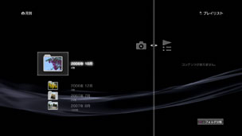

プレイリストを作成／再生する
本体ストレージに保存した画像の中から好みの画像をまとめたり、好きな順に並べかえたりしてプレイリストを作成し、再生できます。
1. |
|
|---|---|
2. |
|
3. |
作成したプレイリストを選び、 |
4. |
［編集］を選ぶ。  |
5. |
プレイリストに追加したい画像を選ぶ。 |
 （フォト）から
（フォト）から （プレイリスト）を選ぶ。
（プレイリスト）を選ぶ。 （新しいプレイリストの作成）を選ぶ。
（新しいプレイリストの作成）を選ぶ。 ボタンで編集を終了します。作成したプレイリストは、
ボタンで編集を終了します。作成したプレイリストは、ヒント
- プレイリストに追加できるのは、本体ストレージに保存された画像に限られます。
- プレイリスト内の画像のアイコンを選んで
 ボタンを押すとオプションメニューが表示され、画像を印刷したり、スライドショーで画像を見たりできます。
ボタンを押すとオプションメニューが表示され、画像を印刷したり、スライドショーで画像を見たりできます。